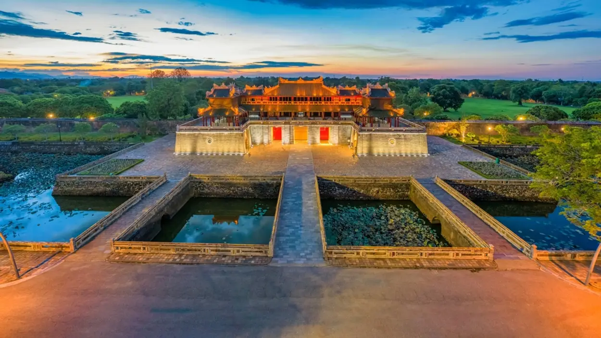
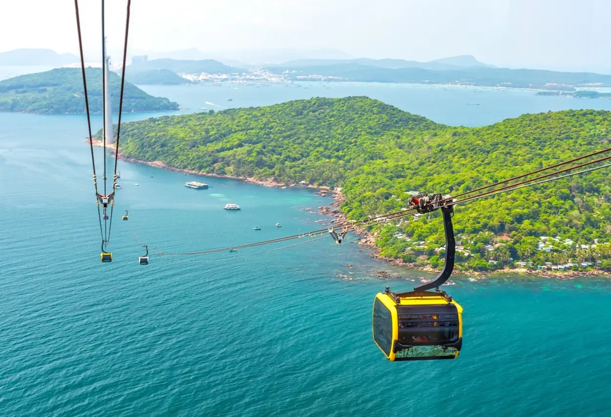
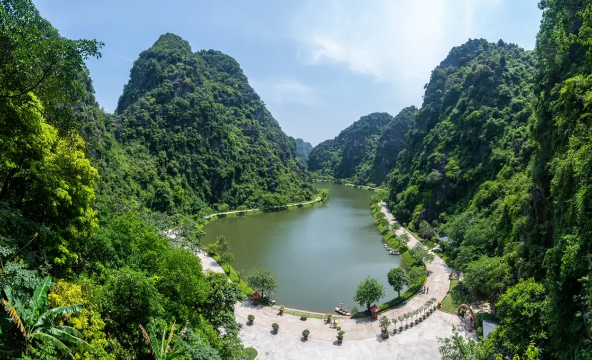
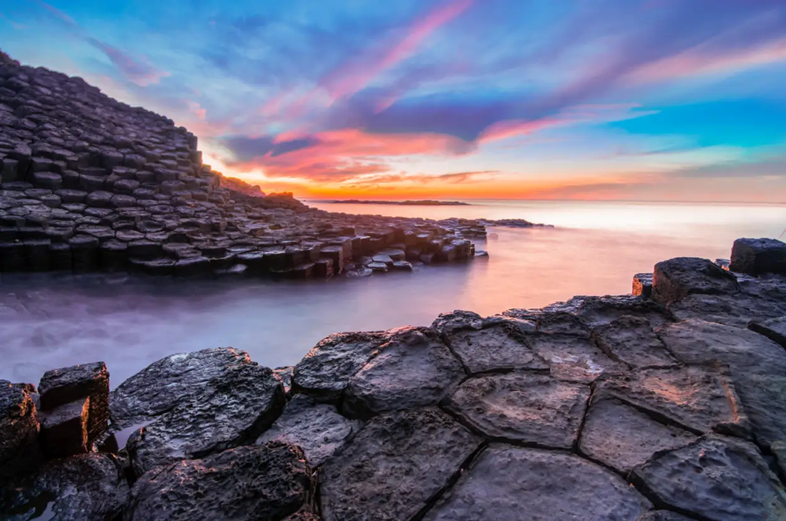
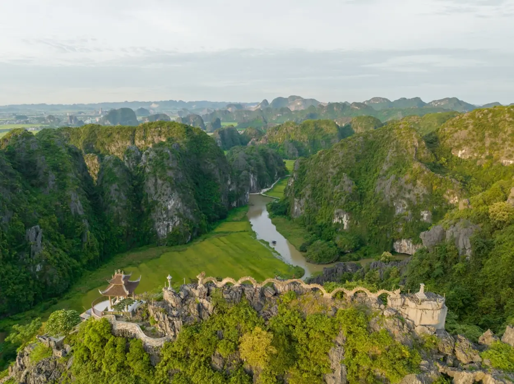
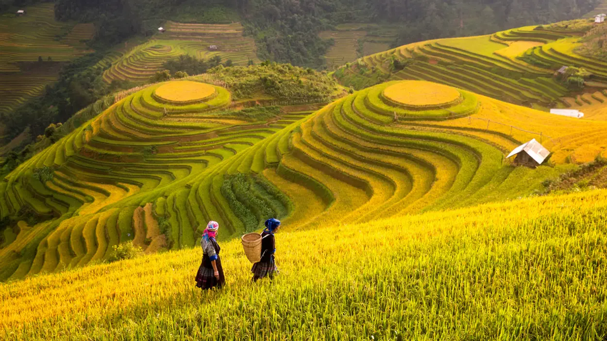
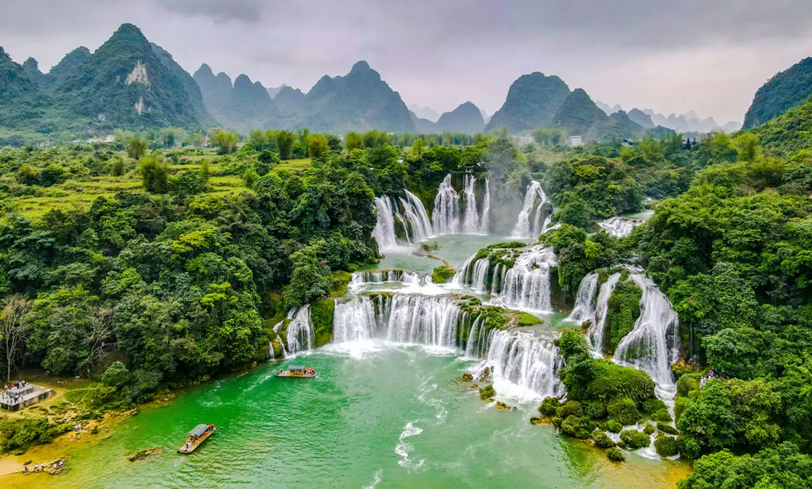
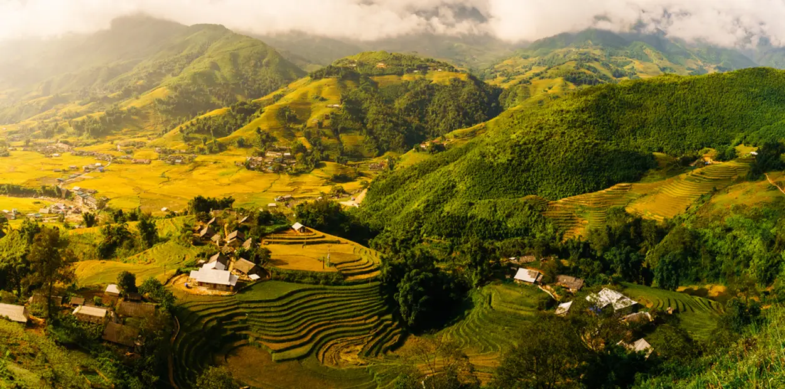
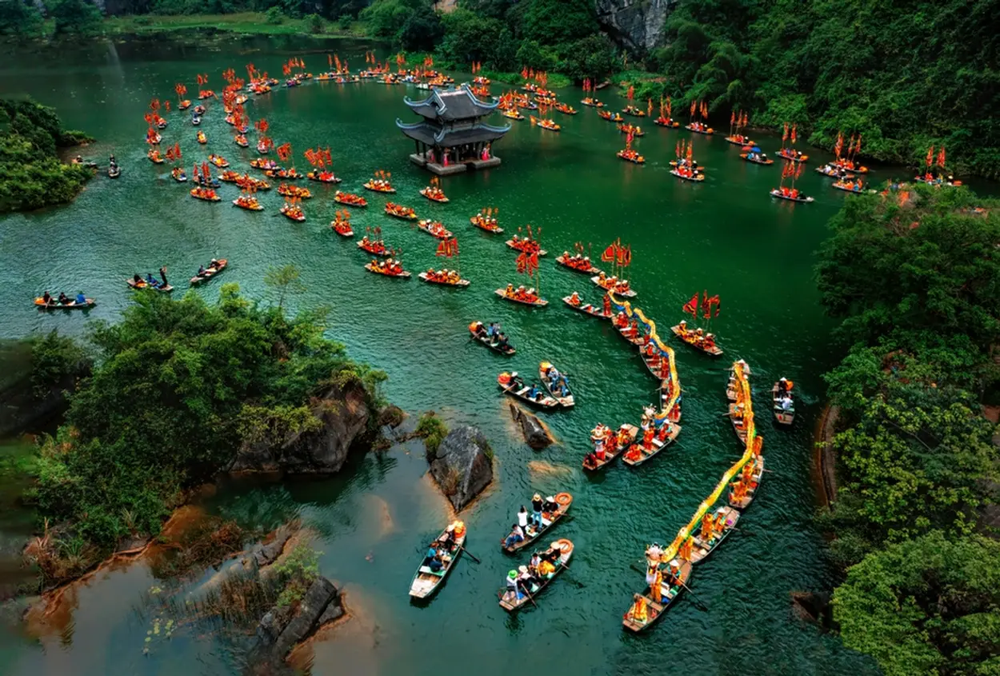
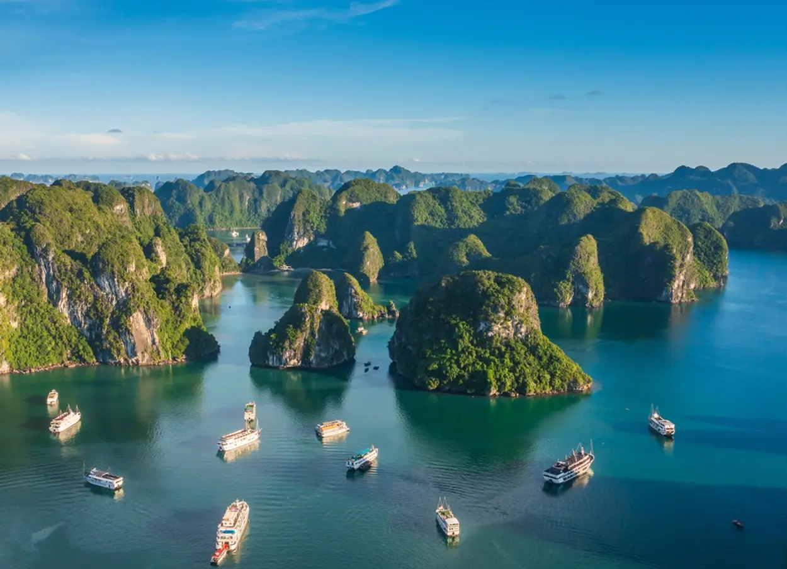

Học viên FunnyCode
| 1. Cố Đô Huế | Huế |
| 2. Đảo Ngọc | Phú Quốc |
| 3. Động Am Tiên | Ninh Bình |
| 4. Gành Đá Dĩa | Phú Yên |
| 5. Hang Múa | Ninh Bình |
| 6. Mù Cang Chải | Yên Bái |
| 7. Thác Bản Giốc | Cao Bằng |
| 8. Thung Lũng Mường Hoa | Sapa |
| 9. Tràng An | Ninh Bình |
| 10. Vịnh Hạ Long | Quảng Ninh |
Khi nhắc đến du lịch Huế, Cố đô Huế và chùa Thiên Mụ là hai địa danh không thể bỏ qua. Nơi đây mang trong mình vẻ đẹp huyền bí xen lẫn nét cổ kính của nền văn hóa dân tộc thời Nguyễn làm say mê bất cứ ai khi đặt chân đến vùng đất này. Còn ngần ngại gì mà không đến Huế ngay nào.
Phú Quốc sở hữu vẻ đẹp đặc trưng vùng biển đảo với bãi cát dài trắng mịn, màu nước xanh trong vắt, êm ả, hàng dừa cao vút. Phú Quốc không chỉ được thiên nhiên ưu đãi khi có có nhiều bãi tắm đẹp, hệ thống động thực vật phong phú mà còn bởi khí hậu quanh năm mát mẻ. Khi đi du lịch Phú Quốc, bạn đừng quên trải nghiệm các tour tham quan đảo để tận hưởng và chiêm ngưỡng vẻ đẹp của biển xanh, cát trắng nhé.
Động Am Tiên là thuộc quần thể di tích cố đô Hoa Lư, tại xã Trường Yên, huyện Hoa Lư, tỉnh Ninh Bình. Động Am Tiên còn được khách du lịch và người dân địa phương gọi là “Tuyệt Tình Cốc”. Nơi được bao quanh bởi những ngọn núi non trùng điệp và điểm nhấn là ngôi chùa Am Tiên mang vẻ đẹp cổ kính, tâm linh. Bạn sẽ được đắm chìm trong sự thanh bình, hãy đến cảnh đẹp thiên nhiên Việt Nam này nhé, chắc chắn bạn sẽ không có hối tiếc đâu.
Gành Đá Dĩa ở tỉnh Phú Yên được mệnh danh là kiệt tác thiên nhiên vì được hình thành từ những trận núi lửa cách đây 200 triệu năm trước. Nơi đây có hàng nghìn cột đá đa hình dạng xếp chồng lên nhau, khít nhau như bàn tay của một vị thần sắp đặt và còn khiến du khách ấn tượng bởi những gam màu thay đổi liên tục trong ngày.
Gành Đá Dĩa ở tỉnh Phú Yên được mệnh danh là kiệt tác thiên nhiên vì được hình thành từ những trận núi lửa cách đây 200 triệu năm trước. Nơi đây có hàng nghìn cột đá đa hình dạng xếp chồng lên nhau, khít nhau như bàn tay của một vị thần sắp đặt và còn khiến du khách ấn tượng bởi những gam màu thay đổi liên tục trong ngày.
Mù Cang Chải toạ lạc ở thị trấn huyện lỵ của huyện Mù Cang Chải, tỉnh Yên Bái, Việt Nam. Nơi đây là một trong những địa điểm du lịch Yên Bái nhất định bạn phải ghé thăm, đặc biệt là vào mùa thu khi những thửa ruộng bậc thang chín vàng. Khi đến đây bạn sẽ được ngắm nhìn khung cảnh tuyệt vời, cảm nhận sự hùng vĩ, mênh mông trên từng thửa ruộng bậc thang, hay của dòng nước trong veo của Thác Mơ và những con người hiền lành, gần gũi nơi đây. Còn chần chừ gì mà không đến cảnh đẹp thiên nhiên Việt nam này.
Thác Bản Giốc ở Cao Bằng nằm trong top 4 thác nước xuyên quốc gia lớn nhất thế giới. Khí hậu tại nơi đây được chia thành 2 mùa mưa và khô. Đến với Thác Bản Giốc vào mùa mưa, bạn sẽ được ngắm nhìn, dòng thác chảy ồ ạt tung bọt trắng xóa hoặc dòng thác màu xanh ngọc óng ánh, dịu hiền vào mùa khô giúp bạn cảm nhận rõ rệt được sự thoải mái và bình yên nơi đây. Còn chần chừ mà không đến tham quan cảnh đẹp thiên nhiên Việt Nam được nhiều người yêu thích.
Thung lũng Mường Hoa là địa danh hút khách nhiều du lịch khi đến Sapa. Nơi đây tựa như một bức tranh thiên nhiên trữ tình với khung cảnh thanh bình giúp bạn quên đi những xô bồ trong cuộc sống. Thung lũng Mường Hoa là cảnh đẹp thiên nhiên Việt Nam nhất định phải ghé thăm một lần trong đời.
Tràng An là cảnh đẹp thiên nhiên được yêu thích nhất Ninh Bình và là quần thể danh thắng được UNESCO công nhận. Tràng An có 3 khu vực chính, đó là: cố đô Hoa Lư, hang động Tràng An và chùa Bái Đính đã tạo ra nét đẹp hùng vĩ và quyến rũ của Tràng An. Bên cạnh đó, ẩm thực phong phú, thơm ngon cũng là điểm được khách du lịch yêu thích. Trong đó, Chùa Bái Đính là một trong những địa điểm được nhiều khách du lịch yêu thích nhất, khi có tượng Phật bằng đồng dát vàng lớn nhất châu Á và mang trong mình đậm chất cổ xưa của dân tộc cùng khung cảnh tâm linh,đồ sộ xung quanh và không gian thanh tịnh để du khách cầu an, chiêm bái.
Vịnh Hạ Long là một vịnh nhỏ thuộc tỉnh Quảng Ninh và là một trong những di sản thiên nhiên được thế giới công nhận. Nơi đây tựa như bức tranh hài hòa giữa 3 yếu tố bầu trời bao la, mặt nước và những đảo đá nhấp nhô hùng vĩ.Vịnh Hạ Long là điểm du lịch Quảng Ninh thú vị dành cho những ai yêu thích du lịch khám phá, nơi đây chính phong cảnh thiên nhiên Việt Nam rất đáng du lịch một lần trong đời.
